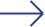
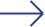

Aarhus Jazz Festival er begejstret for at præsentere sin nye plakat, der står som et levende, pulserende billede af festivalens sjæl.
Plakaten fanger et øjeblik fyldt med energi, hvor to geometriske mænd, fulde af rytme og passion, spiller på deres jazzinstrumenter. Bag dem åbner Aarhus sig med sine ikoniske bygninger – Aros, Domkirken, Rådhuset og Isbjerget – som vidner om byens historiske og moderne skønhed. Farverne – dybe nuancer af orange, blå og guld – smelter sammen i et kalejdoskop af fest, bevægelse og liv.
Det er en plakat, der både fanger blikket og åbner op for fortolkning, som inviterer til at dykke ned i festivalens verden. Den er skabt til at være en del af bybilledet, til at inspirere, vække nysgerrighed og minde os om, hvordan musik, kunst og byens puls kan mødes på magisk vis.
 Plakat, 2024 
Plakat, 2024 
 Plakat, 2023
Plakat, 2023
 Plakat, 2022
Plakat, 2022